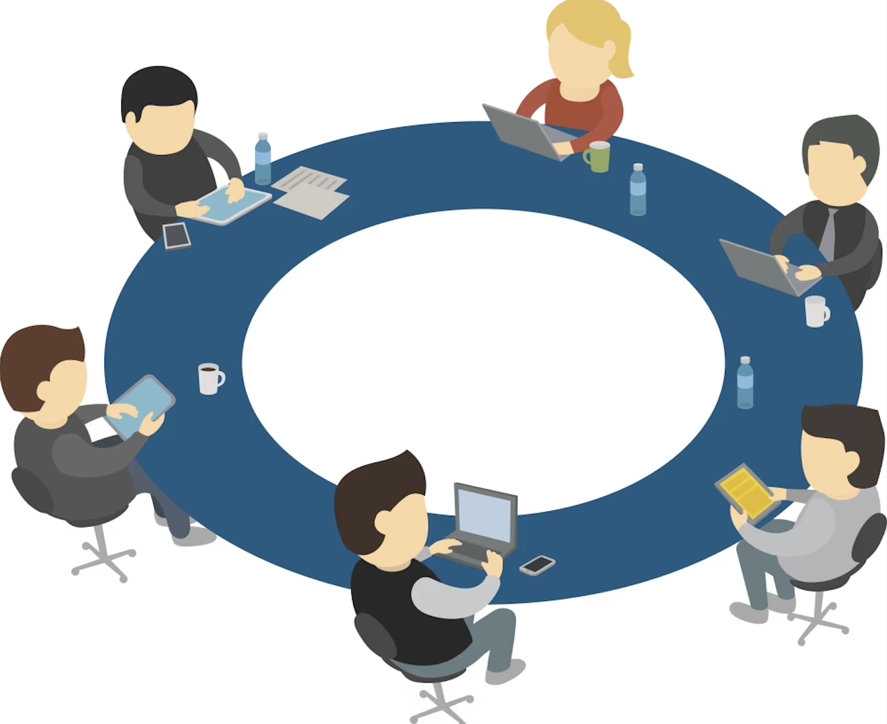

AI as Colleagues: From Tools to Teammates
Recent adoption of large language models (LLMs) has moved from deployments as "copilot" tools toward more dynamic roles in collaborative settings. Early applications positioned LLMs as tools or evaluators — automating summarization, programming assistance, or quality assessment. Although useful, these positioned AI as automation rather than as a partner, whereas emerging multi-agent frameworks suggest a broader transition. Systems such as AutoGen and CrewAI demonstrate how multiple LLMs can be coordinated under structured protocols, with agents adopting complementary roles such as planner, critic, or explainer.
The growing use of multi-agent frameworks raises a deeper question: whether LLMs can be experienced not only as tools but also as colleagues in collaborative work. Ideation provides a representative context to probe this question — LLM assistance can expand the number and diversity of ideas, while also risking homogenization and over-reliance when users interact with a single voice. Multi-agent personas present a promising approach, emulating interdisciplinary team dynamics and enabling humans to retain strategic oversight.

A Typical Scenario
A designer brainstorms how to improve remote team collaboration. With a single AI assistant, the interaction is transactional — ask, receive, repeat. The AI waits to be prompted, delivering one-sided responses that leave the designer as a passive consumer of AI output.
Now imagine a roundtable of AI colleagues — a User Researcher raising pain points, a System Architect flagging constraints, a Market Analyst grounding ideas in data — each building on each other's reasoning, inviting the human to steer and synthesize. Same problem. Fundamentally different experience.
So, can AI systems move beyond process partners toward colleagues
that share intent, strengthen group dynamics, and collaborate with humans to advance ideas?
Design Goals
Goal 1
Adaptive Human-AI Co-ideation
Enable fluid navigation between exploratory and evaluative phases while maintaining strategic human control over the ideation process.
Goal 2
Rich Multi-perspective Collaboration
Facilitate engagement with diverse AI viewpoints to encourage comprehensive exploration and richer creative outcomes.
Goal 3
Transparent Collaborative Control
Provide clear interaction points and user-friendly interfaces that enable strategic oversight while leveraging AI capabilities.

System Architecture Overview

The MultiColleagues system implements a multi-agent conversational framework where multiple AI agents work together as colleagues rather than individual tools. Each agent has distinct roles and expertise, contributing unique perspectives during collaborative ideation sessions.
The system features a dual-mode switching framework based on the double diamond design methodology. Explore mode emphasizes breadth and diversity of viewpoints for divergent thinking, while Focus mode emphasizes depth, clarity, and actionable outcomes for convergent evaluation.
Study Design
Participants
20 participants (9 males, 11 females), aged 20-39 years, including 15 students and 5 early-career professionals in technology, research, and design.
Methodology
Within-subjects study comparing MultiColleagues to a single-agent ChatGPT baseline using think-aloud protocols and structured evaluations.
Measures
Social presence, idea quality and novelty, engagement and flow, user control, and adaptive thinking mode support across three research questions.
Key Findings
Our within-subjects study with 20 participants demonstrated that MultiColleagues significantly outperformed the single-agent baseline
across multiple dimensions of collaborative ideation.
RQ1: Collaborative Experience
MultiColleagues fostered stronger team-like collaboration and engagement
| Metric | MultiColleagues (M ± SD) |
Baseline (M ± SD) |
p-value | Effect Size (r) |
|---|---|---|---|---|
| Teammate-like Feel | 5.75 ± 1.02 | 5.05 ± 1.15 | .046* | 0.49 |
| Complementary Strengths | 6.05 ± 1.00 | 5.05 ± 1.64 | <.01** | 0.71 |
| Engagement & Flow | 5.70 ± 1.38 | 4.45 ± 1.57 | .014* | 0.63 |
RQ2: Creative Outcomes
MultiColleagues produced higher quality and more novel ideas
| Metric | MultiColleagues (M ± SD) |
Baseline (M ± SD) |
p-value | Effect Size (r) |
|---|---|---|---|---|
| Creative Exploration | 6.00 ± 0.87 | 4.95 ± 1.55 | .018* | 0.63 |
| Outcome Quality & Novelty | 5.95 ± 0.92 | 4.97 ± 1.16 | <.01** | 0.69 |
| Process Enrichment | 5.80 ± 1.20 | 5.00 ± 1.72 | .054 | 0.45 |
RQ3: System Design & User Agency
MultiColleagues provided stronger user control and adaptive thinking support
| Metric | MultiColleagues (M ± SD) |
Baseline (M ± SD) |
p-value | Effect Size (r) |
|---|---|---|---|---|
| User Control | 5.80 ± 1.32 | 4.40 ± 1.79 | .033* | 0.55 |
| Adaptive Thinking Mode | 5.90 ± 1.29 | 4.60 ± 1.70 | .023* | 0.58 |
| Future Use Intent | 6.15 ± 1.09 | 5.50 ± 1.61 | .098 | 0.38 |
Behavioral Engagement
| Metric | MultiColleagues | Baseline | p-value |
|---|---|---|---|
| Utterances | 8.35 ± 5.79 | 4.10 ± 2.45 | .001** |
| Total Words | 104.70 ± 55.85 | 51.30 ± 42.47 | <.001*** |
| Session Duration (min) | 12.90 ± 2.80 | 9.80 ± 2.30 | .006** |
Idea Development Patterns
| Metric | MultiColleagues | Baseline | p-value |
|---|---|---|---|
| Time per Main Topic (min) | 2.93 ± 0.71 | 1.39 ± 0.36 | <.001*** |
| Time per Sub-topic (min) | 0.91 ± 0.40 | 0.36 ± 0.14 | <.001*** |
| TTCT Originality Score | 3.78 ± 0.38 | 3.59 ± 0.44 | .202 |
Key Insights
Enhanced Collaboration: Participants experienced MultiColleagues as more team-like, with significantly stronger complementary strengths (p < .01, r = 0.71).
Higher Quality Ideas: MultiColleagues produced ideas rated significantly higher in quality and novelty (p < .01, r = 0.69).
Deeper Engagement: Users contributed nearly twice as many utterances and spent over 30% more time exploring ideas.
* p < .05, ** p < .01, *** p < .001. Effect sizes: small (r = 0.1), medium (r = 0.3), large (r = 0.5)
Design Implications for AI Colleagues

Our research identifies critical design principles for transitioning from AI tools to AI colleagues in professional ideation contexts. Key implications include the importance of proactive multi-voiced collaboration where agents contribute independently rather than waiting for explicit prompts, seamless orchestration mechanisms that coordinate agent contributions without overwhelming users, and trust-building features that establish credibility through transparent reasoning and consistent behavior. These design considerations ensure that AI colleagues enhance rather than replace human creativity, fostering environments where diverse perspectives can emerge naturally and contribute meaningfully to collaborative outcomes.
BibTeX
@inproceedings{quan2026multicolleagues,
title = {Towards AI as Colleagues: Multi-Agent System Improves Structured Professional Ideation},
author = {Quan, Kexin and Albassam, Dina and Wu, Mengke and Ding, Zijian and Chin, Jessie},
booktitle = {Proceedings of the 2026 CHI Conference on Human Factors in Computing Systems (CHI '26)},
year = {2026},
month = {April},
pages = {1--17},
location = {Barcelona, Spain},
publisher = {ACM},
doi = {10.1145/3772318.3790375},
isbn = {979-8-4007-2278-3/2026/04},
url = {https://arxiv.org/pdf/2510.23904}
}